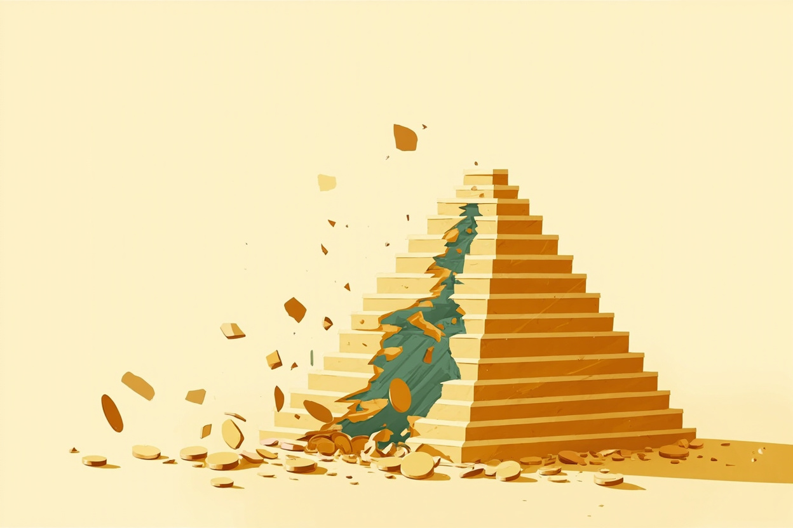

本章目标（约25分钟）：学完你能——①说出《反电信网络诈骗法》给你的三层保护和 96110 的用途；②逐个识别刷单返利、虚假投资理财、杀猪盘、冒充公检法、冒充客服、贷款代办等高发骗局的话术特征与拆解动作；③用官方"四要件"判断一个项目是不是非法集资；④手算庞氏骗局为什么必然崩盘，从此对"保本高息"免疫；⑤知道被骗后的黄金补救顺序（止付、报案、留证）；⑥理解受害者心理，不指责家人，并学会用不居高临下的方式和父母谈防骗。
怎么用本章：这一章建议全家一起读，尤其第二节和第七节；读完把"红旗信号自查表"（第九节）截图存进家庭群。骗局的杀伤力不在复杂，而在"你没想过它会轮到你"——本章的任务就是让你把每种骗法预先在脑子里过一遍，形成免疫记忆。
一、电诈全景：它已经是"第一大犯罪类型"量级的威胁
先看官方态度与制度武器，再逐个拆骗法
为什么防骗是财商课的一部分
前面十二章教你把钱管住、让钱增值；这一章只有一个任务：别让人把钱骗走。公安部口径下，电信网络诈骗案件在刑事立案中的占比多年持续上升，是发案增长最快的犯罪类型之一；单案损失从几千元到数百万元都有，且受害者横跨所有学历、年龄与收入层。对个人财务而言，一次被骗的损失往往等于十年储蓄的成果——防骗是收益率最高的"理财"：避开一次 20 万的损失，相当于 100 万本金安全增值 20%。
骗局虽多，底层逻辑高度一致：利用你对权威（公检法、监管部门、专家）、对利益（高息、返利、内幕）、对情感（恋人、老乡、"客服"的体贴）和对恐惧（涉案、征信受损、账户冻结）的反应。本章第二节起逐个拆类型，第六节专门讲这些心理机关——先记住一句总纲：凡是催你"快、瞒、转"的，都是骗局（催你快、让你瞒着家人、诱导你转账）。
《反电信网络诈骗法》：2022 年起，防骗有了专门法
2022 年 9 月通过、同年 12 月 1 日起施行的《中华人民共和国反电信网络诈骗法》是我国第一部反电诈专门法律。它把反诈从"警方事后打击"升级为"全链条事前治理"：电信治理（实名登记、异常卡号监测、改号电话拦截）、金融治理（银行账户与支付账户实名制、异常交易监测与延迟到账、涉诈资金紧急止付）、互联网治理（APP、域名、账号涉诈监测处置），并明确了对"帮信"行为（出售出借电话卡、银行卡，为诈骗提供技术支持与引流）的法律责任。
这部法和你直接相关的几点：①银行对异常转账有权核实、延迟甚至拦截——所以银行柜员"多问几句"是在履行法定职责，别嫌烦；②你的银行卡、电话卡、支付账号绝不可出租出借出售，否则可能构成帮助信息网络犯罪活动罪（"帮信罪"已是起诉人数居前的罪名，最高检历年通报口径），大学生与求职者是高危人群；③被骗资金的追缴返还有了明确法律通道。
96110 与国家反诈中心 APP：官方给你的两件防具
96110 是全国统一的反诈预警劝阻专线：它打给你，说明你或你的家人正在被骗子接触（警方监测到你与涉诈号码通话、访问涉诈网址等），请务必接听——公安部多次提示，96110 来电不接、劝阻不听的案例中损失率显著更高。它也可以用于咨询"这个情况是不是诈骗"。注意与 110 的分工：96110 管预警劝阻与咨询，110 管报警处置；已经转账被骗，第一时间打 110。
国家反诈中心 APP（公安部刑事侦查局开发）提供四项核心功能：诈骗预警（对涉诈来电、短信、APP、网址实时拦截提示）、快速举报、身份核实（验证对方账号是否涉诈）、骗局曝光（官方骗法案例库）。建议全家安装并开启"来电预警"权限；它拦截的每一个电话，都可能是一次未遂的转账。老人机用户至少做到：把 96110 存入通讯录、大额转账前先给子女打个电话。
二、高发类型逐个拆：话术特征 · 为什么信 · 怎么拆
国家反诈中心历年通报的高发骗法，每种给一套"识别—拆解"动作
刷单返利类：发案量最大的"入门骗局"
话术特征：以"兼职点赞、关注、垫资刷销量，日结高薪"引流（常见于短信、群聊、短视频评论区）；先让你做几单小额任务并秒返本金加佣金建立信任；随后诱导下载专用 APP，任务升级为大额"连单""组合单"；当你投入几千上万后，系统提示"操作失误、账户冻结"，要求继续充值解冻——直到你掏空为止。为什么信：前几单是真的返钱（骗子的诱饵成本），加上"沉没成本"心理让你舍不得撤。
怎么拆：记住官方定性——所有刷单都是违法行为（虚假交易违反《反不正当竞争法》，组织者可能构成非法经营类犯罪），"合法兼职"根本不存在刷单这个品类；凡是"先垫资后返利""做任务需充值"的兼职，一律拉黑。正规兼职通过用人单位直接结算，不需要你先掏一分钱。
虚假投资理财类：损失金额最大的"专业骗局"
话术特征：通过"股神直播间""荐股群""理财大师一对一"引流，晒盈利截图与"内部渠道"；诱导下载非应用商店的 APP 或点击链接开户，入金后账户里数字飞涨（后台可随意改数），小额提现成功一次以巩固信任；加大投入后无法提现，客服以"缴税、保证金、解冻费"名义要求继续打款。为什么信：伪装极其专业——有"分析师"、有直播、有K线图，且早期"提现成功"让你验证了"这是真的"。
怎么拆：三个铁律——①查牌照：在中国境内从事证券期货基金业务必须持证监会颁发的许可证，可在中国证监会官网"合法机构名录"与中国证券业协会、中国证券投资基金业协会官网查询机构与人员执业资格；查不到的，无论包装多专业都是假的。②查账户：正规投资入金进入银行第三方存管账户或机构对公账户，凡是让你转账到个人银行卡或来路不明的对公账户，100% 是骗局。③记住第9章的话："大师"若真能稳定高收益，早已闷声发财，不需要拉你入伙赚你的本金。
杀猪盘：感情与理财的复合骗局，单案损失常达数十万
话术特征：始于婚恋网站、社交 APP 的"完美对象"——形象好、事业有成、体贴入微，数周内迅速升温确立关系（养猪）；随后"不经意"透露自己有投资内幕、系统漏洞、博彩规律，先带你小赚（喂糖）；等你投入积蓄甚至借贷入金后，人号两空（杀猪）。为什么信：情感依赖让人关闭怀疑——"他/她怎么会骗我"，且骗局周期长达数月，骗子有充分时间打磨人设。
怎么拆：给所有网恋立一条硬规则——未在线下长期真实相处前，谈钱即拉黑。具体信号：从不视频或视频极少且画质可疑（盗用他人影像）、拒绝线下见面总有理由、话题总绕向投资/博彩/加密货币、"带你赚钱"。验证动作：反向搜索对方照片（图片溯源）、要求实时视频并做指定动作、告诉一两位亲友让局外人把关——骗子最怕的不是你怀疑，而是你把关系"晒"到阳光下。被骗后除报警外，保留全部聊天记录与转账凭证（见第五节）。
冒充公检法：利用恐惧的"剧本杀"
话术特征：来电自称公安局、检察院、法院或医保、银行工作人员，报出你的姓名、身份证号（个人信息已被非法获取），声称你"涉嫌洗钱/诈骗/医保违规"，出示伪造的"通缉令""警官证"（网页或图片）；要求你保密（不许告诉任何人）、独处、开启屏幕共享、把资金转入"安全账户"验资，或索取银行卡号、密码、验证码。为什么信：对公权力的天然敬畏＋精准报出个人信息＋制造的时间压力（"今天不配合就抓你"）。
怎么拆：官方铁律背下来——公检法机关不会电话办案，不存在"安全账户"，不会线上出示通缉令，更不会索要密码和验证码。任何自称公检法要求转账/屏幕共享的，直接挂断，然后拨打 110 或到就近派出所当面核实。屏幕共享＝把手机完全交给对方（验证码尽收眼底），对陌生人开屏幕共享等于交出钱包钥匙。
冒充客服退款与"关闭百万保障"：购物时代的日常陷阱
话术特征：自称电商或快递客服，准确报出你的订单信息（数据泄露所致），称"商品质量问题可双倍理赔""误将你设为代理商/会员，每月自动扣费需取消""你的微信支付'百万保障'已到期，不关闭将扣费"；随后引导你下载会议软件屏幕共享、点开钓鱼链接填银行卡、或在借贷平台借款"走流水验证"。为什么信：订单信息全对＋"退款/取消扣费"是为你好的姿态＋对自动扣费的恐慌。
怎么拆：①正规退款原路退回，永远不需要你"操作验证"、不需要屏幕共享、更不需要你借款；②所谓"百万保障"本身是支付平台的免费功能，不存在"到期扣费、需要关闭"（官方多次辟谣）；③任何客服来电，挂断后从官方 APP 内联系客服回拨核实——不在对方给的链接、二维码、会议号里操作。一句话：退款要你掏钱（或掏信用）的，都是诈骗。
贷款代办与校园贷变体：专挑缺钱的人下手
话术特征："无抵押、秒到账、不看征信"的贷款广告；放款前以"工本费、保证金、解冻费、刷流水、验证还款能力"等名义要求先转账——钱没借到，先被掏空；或诱导在多个非法平台借贷"以贷养贷"。校园贷变体：以"培训贷""美容贷""回租贷（卖手机再租回）"等名义向大学生放款，实际年化利率畸高，暴力催收。监管口径早已明确：小额贷款公司不得向大学生发放互联网消费贷款（2021 年五部门通知），未经批准的机构不得对在校学生放贷。
怎么拆：正规贷款的三个特征——先放款后收费（任何放款前收费都是诈骗）、持牌机构经营（在金融监管部门许可名单内，见第5章）、年化利率明示（合同必须载明 APR，见第5章算法）。缺钱时的正确顺序：先算清真实资金缺口与还款能力，再走银行与持牌机构的正规渠道；"以贷养贷"是通向债务危机的滑梯（自救路径见第5章）。
新型马甲：AI 换脸、虚拟货币与"数字人民币"名义
骗术随技术升级：①AI 换脸与拟声——用深度伪造视频/语音冒充亲友、领导借钱（已有判例与官方通报）。拆解动作：涉及转账的"熟人"请求，挂断后用你通讯录里原有的号码回拨，或约定只有家人知道的暗语验证；②虚拟货币名义——"稳定币理财""矿机托管""链上套利"，我国官方口径明确：虚拟货币相关业务活动属于非法金融活动（2021 年十部门通知），所谓虚拟币投资平台不受任何保护，且是洗钱重灾区；③"数字人民币"名义——冒充官方推广"数字人民币内测、充值返利"，数字人民币由人民银行发行、通过运营机构办理，不存在"内测返利"。
通用原则不变：新名词不是新机会，而是新马甲。任何投资标的，先问三个问题——它由谁监管？牌照在哪查？钱进了谁的账户？三问有一个答不上来，就走人（识别框架详见第6章）。
三、非法集资：官方定义与"四要件"识别
它和电诈的区别：电诈是"骗了就跑"，非法集资是"养肥再崩"
什么是非法集资：法规原文与四要件
《防范和处置非法集资条例》（国务院令第 737 号，2021 年 5 月 1 日施行）给出官方定义：未经国务院金融管理部门依法许可或者违反国家金融管理规定，以许诺还本付息或者给予其他投资回报等方式，向不特定对象吸收资金的行为。司法实践中的认定通常看四个要件（最高法司法解释口径）：①非法性（未经依法许可或借用合法经营形式吸收资金）、②公开性（通过网络、媒体、推介会、传单、口口相传等公开宣传）、③利诱性（承诺还本付息或给付回报）、④社会性（向不特定对象即社会公众吸收资金）。四条同时具备，基本可断定是非法集资。
用四要件做"三秒排查"：这个项目有金融牌照吗（查金融监管总局、证监会官网名录）？它是不是在公开拉人头？有没有承诺保本付息或固定高回报？是不是谁的钱都收？四问中两问以上踩线，立刻远离。特别提醒：非法集资不一定一开始就打算骗——很多项目方"真心想做生意"，但只要向公众承诺保本高息融资，就已经违法，且商业失败时投资者血本无归。
官方通报的高发马甲：养老、虚拟货币、消费返利、解债
处置非法集资部际联席会议办公室与各地金融管理部门历年通报的高发名义包括：①养老服务——以"预售养老床位""养老公寓投资""康养会员费"名义收取大额资金，承诺高息或"入住折扣"，实际资金池运作（多地已判决大案，老年人为主要受害者，详见第15章）；②虚拟货币与"区块链"——发行空气币、假交易所、"链改"概念；③消费返利——"购物全返""消费即投资"，用后来者的钱返还先前消费者，本质仍是资金池；④"解债服务"——声称能帮你化解债务、修复征信，先收高额"服务费"，官方明确提示此类均为骗局（征信修复本身不存在收费合法渠道，见第5章）；⑤假冒"国家政策"——伪造"乡村振兴""共同富裕""数字中国"文件拉投资。
共同特征只有一个：承诺保本＋高息（或高额回报）＋向公众收钱。马甲年年换，特征从不变。查询渠道：地方金融管理局官网的风险提示专栏、"处非联办"通报、国家金融监督管理总局官网——投钱之前花十分钟搜一搜"项目名＋非法集资/风险提示"，是最便宜的尽调。
残酷但必须知道：参与非法集资，损失自己承担
《防范和处置非法集资条例》第二十五条明确：因参与非法集资受到的损失，由集资参与人自行承担。也就是说：处置程序会尽力追赃挽损（查封、扣押、冻结涉案资产并按比例清退），但国家不兜底、财政不买单；而此类案件的资产清退率，从历年大案看通常只能覆盖本金的一小部分。这条规定的政策意图不是冷漠，而是把"投资要自负"的责任边界说清楚——高息的诱惑背后，是没有任何制度为你托底。
由此推出防非的两条纪律：①只和持牌机构打交道：存款找银行（且有存款保险，见第4章）、证券基金走持牌机构官方渠道、保险找持牌保险公司（牌照均可在监管官网查询）；②任何"稳赚"承诺都是违法信号本身——因为合法机构被监管禁止承诺保本保收益（资管新规打破刚性兑付，见第7章），敢承诺的恰恰是监管之外的资金池。
四、庞氏骗局的数学必然与 P2P 的教训
为什么"保本高息"在数学上就活不下去
手算庞氏骗局：承诺月息 10%，资金链什么时候断
庞氏骗局的定义特征：不靠真实盈利，用后来投资者的本金支付先前投资者的利息。用数学看它为什么必然崩盘——假设平台吸收 100 万元，承诺月息 10%，无真实收益：
第 1 个月需付利息 10 万元→必须新募至少 10 万；第 2 个月存量 110 万需付 11 万→新募门槛逐月按 1.1 倍复利抬升；第 12 个月需付约 31 万、第 24 个月需付约 98 万、第 36 个月需付约 309 万……若还要满足随时赎回，新增资金需求更大。要维持两年，累计新募资需达初始规模的数倍；一旦新增放缓（市场饱和、口碑逆转、监管介入），当月利息付不出，挤兑开始，数周内全盘崩塌。
教学示例：等比增长模型（月息 10% 时利息支出按 1.1ⁿ 增长）；真实案例见官方通报的历年非法集资大案
结论：承诺的利率越高，崩盘来得越快——月息 10% 撑不过三年，年化 15% 以上的"理财"同样撑不过一轮周期。这就是"高收益意味着高风险"的数学版：收益若来自真实经营，没有任何合法生意能稳定支撑两位数无风险回报；收益若不来自经营，就只能来自下一个人的本金。看穿庞氏骗局不需要金融知识，只需要小学乘法。

插画 · AI 生成 —— 庞氏金字塔：用后来者的砖，垫先前者的塔，塌只是时间问题
对照基准：正规金融的收益率坐标长什么样
给"高不高"一个坐标系（数字为撰写时的量级口径，以官方实时数据为准）：银行存款与货币基金——年化 1%—2% 量级；储蓄国债——2% 上下；银行 R2 级理财与纯债基金——近年年化多在 2%—4% 区间波动且不保本；长期股票类资产的全球历史均值——年化 7%—10%，但单年可能 −30%。任何宣称"保本"且年化超过 6% 的产品，在这个坐标系里找不到合法位置——这正是那句被反复引用的官方警示的由来：时任银保监会主席郭树清在 2018 年陆家嘴论坛提示，理财产品收益率超过 6% 就要打问号，超过 8% 就很危险，10% 以上就要准备损失全部本金。
使用方法：听到任何收益率，先放进坐标系——它比国债高几倍？高出来的部分靠什么赚？说不清利润来源的收益率，来源就是你的本金。这套"收益来源三问"（谁在付钱、为什么付、凭什么持续）值得贴在家庭理财的首页（第6章风险收益铁律、第16章为什么人会选择性忽视这三个问题）。
P2P 的教训：一次全民参与的金融实验
P2P 网络借贷 2013—2015 年爆发式生长，高峰期平台约五六千家（行业与监管通报口径），宣称"银行存管、小额分散、信息中介"。2018 年起集中爆雷，到 2020 年 11 月中旬，全国实际运营的 P2P 网贷机构由峰值约 5000 家完全归零（银保监会官方宣布）——数千万出借人的资金损失成为一代人的金融记忆。教训三条：①"银行存管"不等于安全——存管只管资金流向合规，不担保项目真实与兑付能力，当时大量广告故意混淆两者；②信息中介变信用中介就是资金池——平台自融、期限错配、假标自担保，全都踩中非法集资特征；③监管套利窗口期的"创新"，风险不会消失只会延后集中爆发。
P2P 之后，同类逻辑换了马甲继续出现：伪"助贷"、伪"供应链金融"、伪"元宇宙地块"。识别方法没变：看它有没有牌照、资金进谁的账户、收益从哪来。对普通人的制度性保护也在加强——金融业务"必须持牌经营"已是监管铁律（金融业务全纳入监管，无例外），所以"无牌而高息"六个字本身就是判决书。